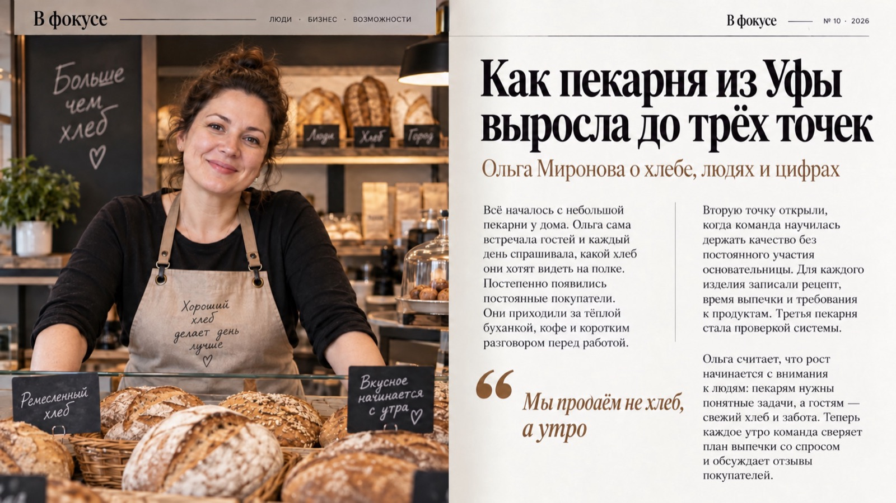
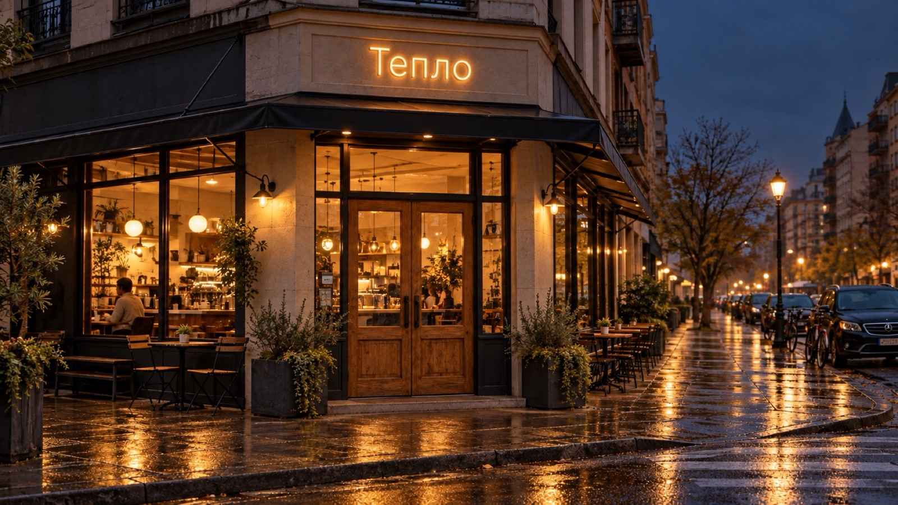
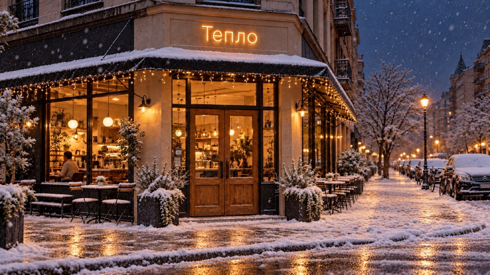
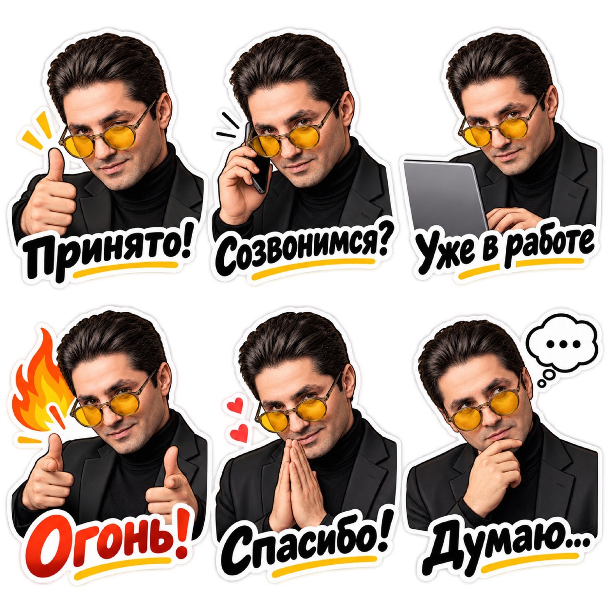
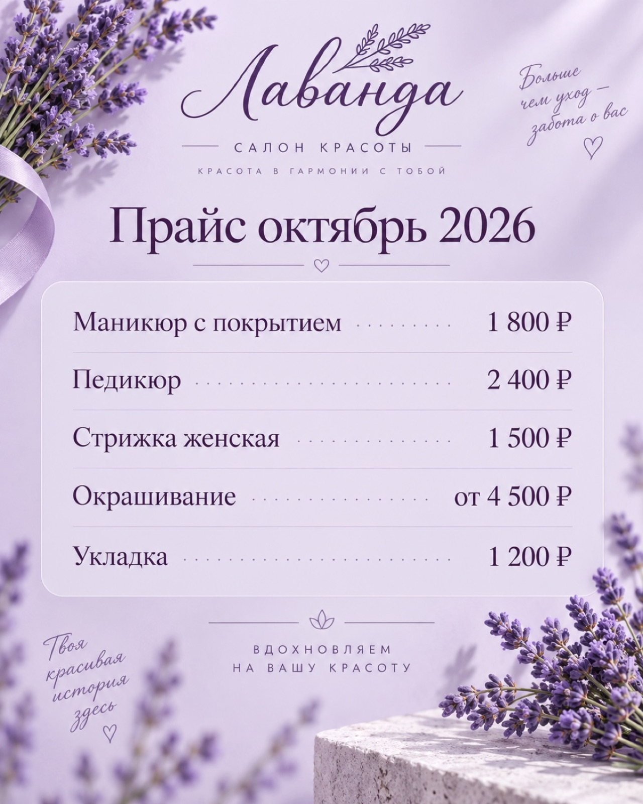
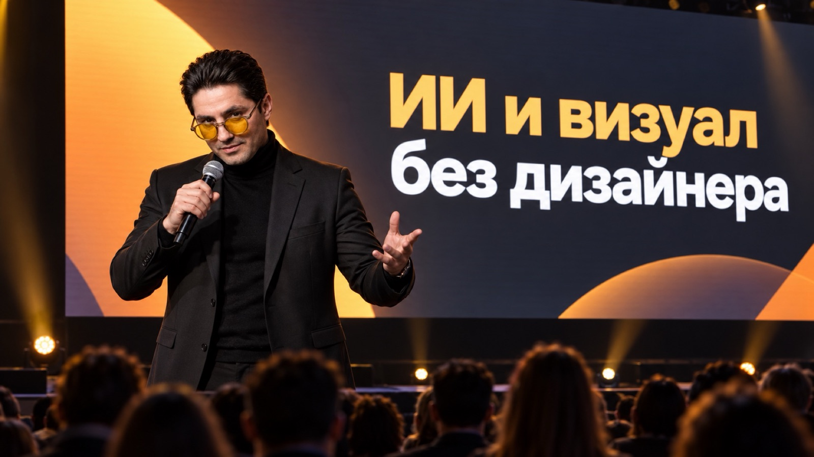

Визуал
без дизайнера
Шпаргалка занятия 6. «ИИ. Новая реальность» · поток 6 · 8 октября 2026 · Альберт Валеев
- Kimiwww.kimi.ai/slides → «Войти» → через Google. Именно kimi.ai: kimi.com открывает китайский сайт.
- NotebookLMnotebook.google.com: ваш Google-аккаунт, вход сразу. Теперь он называется Gemini Notebook, это он.
- Gammagamma.app → «Войти» → через Google.
- ChatGPTchatgpt.com: ваш аккаунт с Plus.
- CodexПриложение с занятия 5, окружение workspace. Проверьте, что слева выбрана именно эта папка.
Kimi Slides
Тема своя или из списка ниже.
Открыть Kimi Slides · kimi.ai/slides ↗- Открытьwww.kimi.ai/slides, вход через Google.
- ПромптВставьте промпт ниже, вместо скобок своя тема и аудитория.
- ПланKimi покажет план слайдов: поправьте словами, потом «Сгенерировать».
- СмотретьЧерез 3–5 минут презентация открывается прямо в окне Kimi: листайте слайды там. Ничего скачивать и искать не нужно.
Презентация на тему: «[ваша тема. Например: Кофейня «Тепло»: чем мы полезны партнёрам по клубу]». Аудитория: [кто будет смотреть. Например: участники бизнес-клуба; клиент на первой встрече; инвестор; своя команда]. Содержание: проблема, кому это нужно, 3–5 аргументов, примеры из моей сферы, следующий шаг. 10 слайдов. Стиль: деловой, минималистичный, крупные заголовки, без рекламного шума. Цифры не выдумывай: если я их не дал, обойдись без цифр.
Темы, если своей нет
Касание копирует тему. Вставьте её в промпт вместо скобок.
Kimi не пустил: GLM
Бесплатный Kimi даёт несколько задач. Закончились или не входит: тот же промпт в GLM.
Открыть GLM · chat.z.ai ↗- Открытьchat.z.ai, вход через Google.
- РежимВыберите режим слайдов (AI Slides) рядом с полем ввода.
- ПромптТот же промпт, что для Kimi. Дальше так же: план, генерация, слайды прямо в окне.
Мини-промпт: документ на 20 слайдов
Новый чат в ChatGPT или Gemini.
Открыть ChatGPT · chatgpt.com ↗Помоги мне подготовить презентацию. Сначала задай мне по одному три вопроса: 1) о чём презентация и чем занимается мой бизнес или проект; 2) для кого она; 3) что должно произойти после показа: купили, записались, согласовали, запомнили. Когда я отвечу, напиши текст презентации на 20 слайдов. Для каждого слайда: «Слайд N. Заголовок до шести слов», под ним 2–4 коротких тезиса. Первый слайд титульный, последний со следующим шагом для зрителя. Используй только мои факты и цифры, ничего не выдумывай. Где фактов не хватает, поставь [уточнить]. Упакуй весь текст в файл Word (.docx) на скачивание. Если не умеешь создавать файлы, выдай текст одним блоком.
- ОтветьтеChatGPT задаст три вопроса. Отвечайте голосом: значок микрофона в поле ввода. Подробнее = лучше.
- ФайлОн пришлёт файл .docx: нажмите, и он скачается в папку «Загрузки». Это ваш источник для всей практики.
- В GeminiПод ответом «Поделиться» → «Экспорт в Документы»: файл сразу в Google Документах.
- Запасной путьСкопируйте текст, откройте docs.new и вставьте: это тоже готовый источник.
Документ в NotebookLM
Один блокнот, один источник: ваш документ.
Открыть NotebookLM · notebook.google.com ↗- Блокнотnotebook.google.com (теперь называется Gemini Notebook) → «Новый блокнот».
- Источник«Добавить источник» → «Загрузить» → папка «Загрузки» → ваш .docx. Или документ с Google Диска.
- СтудияСправа «Студия» → «Презентация». Нажмите карандаш рядом, чтобы открыть настройки, а не создавать вслепую.
- НастройкиФормат «Подробная», длина самая большая из предложенных, язык русский. В поле описания промпт ниже, только потом «Создать». Генерация 3–5 минут.
Что писать в «Настроить»
Промпт держит ваш текст: один слайд документа = один слайд презентации.
Сделай презентацию по загруженному источнику. Один слайд источника это один слайд презентации. Заголовки и тезисы сохрани, ничего не выдумывай и не добавляй цифр, которых нет в источнике. Всего слайдов: 20. Язык: русский. Визуальный стиль: деловой, спокойный, много воздуха, крупные заголовки, одна мысль на слайд.
Правка одной фразой и выгрузка
Любой слайд меняется фразой. Касание копирует фразу.
- ПравкаОткройте презентацию → «Изменить» → выберите слайд → напишите фразу. Остальные слайды не трогаются.
- Скачать⋮ → «Скачать PDF» для показа или «Скачать PowerPoint (.pptx)».
- ВажноВ PowerPoint слайды лежат картинками: текст там уже не поправить. Все правки делайте в NotebookLM до выгрузки.
По желанию: Студия на максимум
Из того же документа за пару минут ещё форматы.
Инфографика по источнику: 5 главных мыслей моей презентации, у каждой иконка и короткая подпись. 2–3 ключевые цифры крупно, только если они есть в источнике. Подписи по-русски. Стиль спокойный, деловой.
Видеопересказ на 2–3 минуты для [кого. Например: нового клиента; партнёра по клубу] по источнику: чем я занимаюсь, кому это полезно и что сделать после просмотра. Только факты из источника. На русском.
Текст для Gamma ровно на 10 слайдов
В том же чате, где документ на 20 слайдов.
Возьми презентацию на 20 слайдов из этого чата и сделай из неё текст для Gamma ровно на 10 слайдов: бесплатная Gamma больше 10 не собирает. Объедини близкие слайды, ничего не выдумывай и не добавляй цифр, которых нет. Для каждого слайда: заголовок до шести слов, 2–3 тезиса по одной строке, подпись к картинке одной фразой. Начни с проблемы, закончи следующим шагом. Слайды раздели строкой ---. Выдай одним блоком, без пояснений.
В Gamma
Вход через Google.
Открыть Gamma · gamma.app ↗- ТекстПромпт выше в том же чате. Скопируйте ответ целиком.
- Gammagamma.app → «Создать» (Create) → «Вставить текст» (Paste in text).
- ВставилиВставьте текст. Если Gamma спросит, как делить, выберите «по карточкам» (Card-by-card). «Продолжить», проверьте, что карточек 10.
- СоздатьВыберите тему оформления → «Создать» (Generate), 1–2 минуты. Правки кликом прямо на слайде.
- ЭкспортМеню «…» → «Экспорт» → PDF или PowerPoint. Бесплатно: 10 карточек за раз и 400 кредитов один раз.
Образец
Два способа: чужая красивая презентация или готовый стиль из нашей библиотеки.
- ОбразецОткройте SlidesCarnival, Slidesgo или Pitch. Найдите презентацию «вот бы мне так».
- СкриншотыСнимите 3–5 скриншотов самых красивых слайдов. Mac: Cmd+Shift+4 и выделить. Windows: Win+Shift+S и выделить.
- ChatGPTНовый чат, приложите скриншоты скрепкой, вставьте промпт ниже. Он вернёт стиль одним блоком.
- NotebookLMТот же блокнот → Студия → Презентация → «Настроить» → промпт шага 3 со стилем → «Создать».
Вытащить стиль
Новый чат, скриншоты приложены.
Открыть ChatGPT · chatgpt.com ↗Вот презентация, стиль которой мне нравится (скриншоты во вложении). Опиши её визуальный стиль максимально детально, как готовый промпт для генератора презентаций. Разбери: палитру с кодами цветов, шрифты для заголовков и текста, расположение элементов на слайде, отступы, тип иллюстраций и иконок, фон, общее настроение. Выдай одним блоком, который я потом вставлю в другой инструмент. Уложись в 1 500 знаков с пробелами: поле в NotebookLM принимает около 2 000, туда ещё пойдёт сам промпт.
Сделай промпт ещё конкретнее, особенно по цветам (HEX) и шрифтам, и сократи до 1 300 знаков.
Тот же документ в новом стиле
Тот же блокнот, тот же источник. Меняется только стиль.
Открыть NotebookLM · notebook.google.com ↗Сделай презентацию по загруженному источнику. Один слайд источника это один слайд презентации. Заголовки и тезисы сохрани, ничего не выдумывай. Всего слайдов: 20. Язык: русский. Визуальный стиль: [вставьте сюда стиль из ChatGPT или готовый стиль из нашей библиотеки стилей].
Три хода
Главное правило блока. Работает в любой нейросети.
- ГолосомРасскажите ChatGPT, что хотите: для чего картинка, что на ней, настроение, текст. Как другу.
- «Сделай промпт»ChatGPT сам разложит: объект, сцена, стиль, свет, цвета, формат, текст в кавычках.
- Картинка«Создай изображение по этому промпту». Потом правки словами: «теплее», «текст крупнее».
Мне нужна афиша для моей кофейни «Тепло». Осень, у нас вернулся тыквенный латте, с 10 октября. Хочу уютно, тёплые цвета: стакан латте на деревянной стойке у окна, за окном жёлтые листья и дождик. Это для поста в Instagram, текст на картинке: «Тыквенный латте вернулся».
Сделай из моего рассказа подробный промпт для генерации картинки. Распиши: что в кадре, где, стиль, свет, цвета, формат (пост 4:5, сторис 9:16 или баннер 16:9) и какой текст будет на картинке, дословно в кавычках. Если чего-то не хватает, сначала задай мне один вопрос. Потом выдай только промпт.
Создай изображение по этому промпту.

Слева «Сделай картинку для кофейни»: красиво, но про что? Справа три хода: наш продукт, наша дата, наш текст. Генератор тот же.
Где рисовать
Оба бесплатно, у обоих дневной лимит.
Открыть ChatGPT · chatgpt.com ↗Открыть Gemini · gemini.google.com ↗- ChatGPT«+» → «Создать изображение». Images 2.5 с 8 сентября, бесплатно с лимитом. Лучше всех держит лицо и текст по-русски.
- ШаблоныВ том же меню плитки: постер, мерч, фото товара, портрет, инфографика. Нажали, приложили фото, готово.
- Gemini«+» → «Создание изображений»: Nano Banana, бесплатно. Сильна в редактуре вашего фото.
Свежие возможности: выберите одну
Вместо скобок своё. Слова «Например:» внутри скобок только подсказка. Под каждым промптом пример результата.
На первом фото я, на втором вещь с маркетплейса. Покажи меня в этой вещи: [где. Например: на осенней улице города; в офисе; на сцене]. Полный рост до колен, фотореализм. Лицо и фигуру не меняй.

Сделай обложку глянцевого делового журнала «[название. Например: В фокусе]» с человеком с моего фото. Заголовки на обложке: «[главный. Например: Как я открыл третью точку]», «[второй. Например: 20 слайдов за час]», «[третий. Например: Клуб, который растёт]». Номер выпуска и штрихкод в углу. Студийный свет, лицо не меняй. Формат 4:5.

Разворот делового журнала «[название. Например: В фокусе]» 16:9. Слева большое фото: [кто и где. Например: владелица пекарни за прилавком с хлебом]. Справа статья: заголовок «[Например: Как пекарня из Уфы выросла до трёх точек]», подзаголовок «[Например: Ольга Миронова о хлебе, людях и цифрах]», колонки текста и вынесенная цитата «[Например: Мы продаём не хлеб, а утро]». Журнальная вёрстка, аккуратная типографика.

Сделай фотореалистичный интерьер [чего. Например: моей кофейни] строго по этому плану: [что где стоит. Например: стойка справа, пять круглых столиков, большое окно слева]. Стиль [например: скандинавский, светлое дерево, растения], утренний свет. Формат 16:9.

Фасад [чего. Например: небольшой кофейни на углу улицы], днём, вывески нет, пасмурно. Фотореализм, формат 16:9.

Тот же кадр, но вечер: тёплый свет из окон, над входом неоновая вывеска «[название. Например: Тепло]». Остальное не меняй.

Теперь зима: снег на тротуаре и на козырьке, гирлянда над окнами. Вывеску и всё остальное не меняй.

Это фото моего товара с телефона. Сделай из него студийную карточку для маркетплейса: [фон. Например: светлый бежевый], мягкая тень, [окружение. Например: сухоцветы рядом], резкость, дорогой вид. Товар, этикетку и форму не меняй. Квадрат 1:1.

Сделай из моего фото стикерпак для Telegram: 6 стикеров, мультяшный стиль, белая обводка, белый фон, лицо узнаваемо. Эмоции и подписи: «Принято!», «Созвонимся?», «Уже в работе», «Огонь!», «Спасибо!», «Думаю…».

Прайс-лист [кого. Например: салона красоты «Лаванда»] одной картинкой 4:5. Заголовок «[Например: Прайс октябрь 2026]». Строки с ценами: «[услуга · цена. Например: Маникюр с покрытием · 1 800 ₽]», «[Например: Педикюр · 2 400 ₽]», «[Например: Стрижка женская · 1 500 ₽]», «[Например: Окрашивание · от 4 500 ₽]», «[Например: Укладка · 1 200 ₽]». Фон [цвет и детали. Например: нежно-сиреневый, веточки лаванды], аккуратная типографика, цены выровнены. Весь текст дословно, по-русски.

Покажи меня на сцене большой бизнес-конференции: за мной огромный экран с надписью «[тема выступления. Например: ИИ и визуал без дизайнера]», зал в полумраке, свет софитов. Фотореализм, лицо не меняй. Формат 16:9.

Готовые промпты с превью
Библиотека: видно результат до генерации.
Открыть bananaprompts.xyz ↗- Открытьbananaprompts.xyz: сотни промптов с картинкой результата.
- ВыбратьНашли картинку «хочу так» без пометки PREMIUM (такие платные) → значок копирования в углу карточки → промпт скопирован.
- ВставитьВ Gemini или ChatGPT, своё фото скрепкой. Промпт на английском, это нормально. Текст на картинке просите по-русски в кавычках.
112 команд: ускоритель
Короткая приписка на английском: ИИ читает её как формат.
Открыть 112 команд ↗- ФотоПриложите своё фото или фото товара. Для схем и инфографики фото не нужно.
- КомандаНапишите команду из списка, нажатие на странице копирует её. Например /billboard.
- ДетальДобавьте одну деталь словами: «для поста в Telegram», «на закате».
Папка brand в окружении
Работаем в Codex, в той же папке workspace, что на занятии 5.
- НоутбукПрактики 6 и 7 делаем на ноутбуке: откройте эту шпаргалку там, materials.neovida.ai/potok-22-09/urok-6.
- CodexОткройте приложение, слева окружение workspace с занятия 5. Это папка workspace на рабочем столе.
- Папка brandОткройте папку workspace на рабочем столе и создайте внутри папку brand, как обычную папку. Или напишите Codex: «создай папку brand».
- МатериалыПеретащите в brand 10–20 файлов, где виден ваш стиль. Список в шаге 2.
- ПромптКнопка ниже скачает vizualny-standart.txt в «Загрузки». Перетащите его оттуда в папку brand.
- ПроверкаНапишите в Codex: «покажи список файлов в папке brand». Видит материалы и txt: всё готово.
Что положить: 10–20 материалов
Всё, где виден ваш стиль. Один-два файла дадут слабый результат, десять и больше точный.
Одна фраза в Codex
Промпт уже лежит в папке, вставлять 16 тысяч знаков не нужно.
Материалы моего бренда лежат в папке brand. Прочитай файл brand/vizualny-standart.txt и выполни его как задание по всем материалам из папки brand (сам файл промпта материалом не считай). Оба результата сохрани в эту же папку: brand_style_sheet.png и brand_style_standard.json. Чего не видно в материалах, отмечай как unknown, вопросы мне не задавай.
- Ждём5–10 минут. Codex смотрит каждый файл, считает цвета, собирает два результата.
- Лист стиляbrand_style_sheet.png: мини-гайд одной картинкой. Откройте и посмотрите глазами.
- Файл стандартаbrand_style_standard.json: ДНК бренда для машины. Читать не нужно, его читает ИИ.
- ПроверкаЦвета похожи на ваши? Шрифты узнаются? Где он не уверен, честно стоит estimated или unknown.
Нет Codex под рукой: тот же стандарт в ChatGPT
Выполни задание из приложенного файла vizualny-standart.txt по всем остальным приложенным материалам моего бренда. Оба результата отдай файлами: brand_style_sheet.png картинкой и brand_style_standard.json. Чего не видно в материалах, отмечай как unknown, вопросы мне не задавай.
Показать промпт «Визуальный стандарт» целиком
Your task is to analyze all brand materials provided by the user and reconstruct
the brand's visual identity as accurately as possible.
The user may provide:
- website screenshots
- logo files
- social media designs
- advertisements
- presentations
- UI screenshots
- packaging
- brand graphics
- photography
- typography examples
- any other visual brand materials
Treat all uploaded materials as one connected visual system.
`,
main_goal: `
Analyze the provided brand materials and create TWO separate final deliverables:
1. A visually designed Brand Style Sheet generated as an IMAGE.
2. A machine-readable Brand Style Standard generated as a separate JSON FILE.
The two deliverables must describe the same visual system and must not contradict each other.
`,
analysis_rules: [
"Analyze all provided materials before generating the final outputs.",
"Identify repeated visual patterns instead of focusing on isolated design decisions.",
"Separate confirmed brand elements from inferred elements.",
"Do not invent brand rules that cannot reasonably be derived from the provided materials.",
"If an exact font cannot be identified, provide the closest visual match and clearly mark it as inferred.",
"If an exact color value cannot be determined, estimate the closest HEX value and mark it as estimated.",
"Distinguish systematic brand elements from accidental or one-off design choices.",
"Focus on reproducible visual rules.",
"Avoid vague descriptions such as 'modern', 'premium', 'stylish' unless they are supported by more specific visual characteristics."
],
analyze: {
brand_identity: [
"overall visual personality",
"brand mood",
"visual positioning",
"style keywords",
"degree of formality",
"visual complexity",
"visual consistency"
],
logo: [
"primary logo",
"secondary logo versions",
"symbol or icon",
"wordmark",
"logo proportions",
"preferred backgrounds",
"clear space",
"logo placement",
"logo color usage",
"incorrect logo usage"
],
colors: [
"primary colors",
"secondary colors",
"accent colors",
"background colors",
"text colors",
"neutral colors",
"gradients",
"color combinations",
"contrast principles",
"estimated HEX values"
],
typography: [
"primary typeface",
"secondary typeface",
"font families",
"font weights",
"font styles",
"headline typography",
"subheadline typography",
"body typography",
"caption typography",
"uppercase/lowercase usage",
"letter spacing",
"line height",
"alignment",
"typographic hierarchy"
],
layout: [
"grid structure",
"alignment",
"spacing",
"margins",
"padding",
"content density",
"white space",
"text-to-image ratio",
"visual hierarchy",
"section structure",
"asymmetry or symmetry",
"dominant composition rules"
],
graphic_language: [
"dominant shapes",
"geometry",
"corners and border radius",
"lines",
"frames",
"containers",
"cards",
"patterns",
"textures",
"decorative elements",
"gradients",
"shadows",
"glows",
"blur effects",
"graphic overlays"
],
icons: [
"icon style",
"stroke weight",
"filled vs outline",
"geometry",
"complexity",
"corner treatment",
"icon usage rules"
],
photography: [
"photographic mood",
"subjects",
"camera angles",
"framing",
"cropping",
"lighting",
"contrast",
"color grading",
"backgrounds",
"depth of field",
"human presence",
"product photography",
"environment",
"image treatment"
],
illustration: [
"illustration style",
"rendering style",
"level of realism",
"3D usage",
"line art",
"character style",
"technical graphics",
"diagram style"
],
ui_style: [
"buttons",
"cards",
"navigation",
"forms",
"inputs",
"tabs",
"badges",
"labels",
"icons",
"interactive elements",
"UI radius",
"UI borders",
"UI shadows"
],
visual_behavior: [
"how headlines are positioned",
"how images are cropped",
"how text overlays images",
"how accent colors are used",
"how attention is created",
"how visual hierarchy is built",
"how empty space is used"
],
prohibited_techniques: [
"colors that visually conflict with the brand",
"typographic styles that break the system",
"incorrect image treatment",
"incorrect logo usage",
"incorrect geometry",
"incorrect spacing",
"visual effects that do not belong to the brand"
]
},
workflow: [
"Step 1: Inspect all uploaded materials.",
"Step 2: Identify repeated visual patterns.",
"Step 3: Determine which patterns represent stable brand rules.",
"Step 4: Separate confirmed, inferred, and unknown information.",
"Step 5: Reconstruct the brand's visual system.",
"Step 6: Generate the visual Brand Style Sheet as an image.",
"Step 7: Generate the complete machine-readable JSON standard.",
"Step 8: Save the JSON standard as a separate .json file.",
"Step 9: Return both final files separately."
],
deliverable_1: {
name: "brand_style_sheet.png",
type: "IMAGE FILE",
instruction: `
Create one professional horizontal Brand Style Sheet based only on the analyzed
brand materials.
This must be a practical mini brand guideline, not an abstract inspiration moodboard.
`,
format: {
orientation: "horizontal",
preferred_aspect_ratio: "16:9",
background: "neutral or brand-appropriate",
presentation_style: "professional brand guideline / art direction board",
quality: "high-resolution, polished, presentation-ready"
},
required_sections: {
logo: `
Show the main logo and any verified variants visible in the provided materials.
Do not invent alternative logo versions.
`,
colors: `
Show the primary, secondary, accent, background, and text colors.
For each important color include:
- visual swatch
- HEX code
- functional role
`,
typography: `
Show the identified or closest matching fonts.
Include examples for:
- H1
- H2
- subtitle
- body text
- caption
Show relevant weights such as:
- Regular
- Medium
- Semibold
- Bold
- Italic
Only include styles actually supported by the source materials.
`,
graphic_language: `
Visually demonstrate:
- shapes
- geometry
- lines
- frames
- patterns
- textures
- icons
- gradients
- decorative elements
- border radius
- recurring graphic devices
`,
photography: `
Show the photographic direction including:
- lighting
- framing
- composition
- color treatment
- subjects
- backgrounds
- overall photographic mood
`,
layout: `
Show the dominant layout and composition principles:
- grid
- spacing
- margins
- hierarchy
- text/image balance
- alignment
- white space
`,
brand_mood: `
Describe the visual atmosphere using 3–7 precise style keywords.
`,
do_dont: `
Include concise examples or descriptions of:
DO:
visual techniques that belong to the brand.
DON'T:
visual techniques that clearly break the brand system.
`
},
visual_rules: [
"Preserve the actual visual personality of the source brand.",
"Do not redesign the brand.",
"Do not modernize the brand unless the source materials already demonstrate that style.",
"Do not add random decorative elements.",
"Do not add unsupported colors.",
"Do not invent fonts.",
"Do not invent patterns.",
"Do not turn the result into a generic Behance-style moodboard.",
"Prioritize clarity, hierarchy, and practical usability."
]
},
deliverable_2: {
name: "brand_style_standard.json",
type: "JSON FILE",
instruction: `
Create a separate machine-readable JSON file describing the reconstructed visual system.
This JSON must be detailed enough to be reused by:
- AI image generation systems
- AI design agents
- web designers
- UI designers
- presentation designers
- social media designers
- advertising designers
- developers
- creative automation systems
The JSON should function as the visual DNA of the brand.
`,
strict_rules: [
"Return valid JSON.",
"Do not use comments inside the JSON.",
"Do not use Markdown inside the JSON file.",
"Use null when a value cannot be determined.",
"Do not fabricate precise values.",
"Mark uncertain conclusions through confidence fields.",
"Use arrays for multiple rules.",
"Use HEX color values wherever possible.",
"Keep terminology consistent.",
"The JSON must correspond directly to the visual Brand Style Sheet."
],
required_schema: {
brand_identity: {
brand_name: null,
visual_summary: "",
brand_mood: [],
style_keywords: [],
visual_positioning: "",
formality_level: "",
complexity_level: ""
},
logo: {
primary_logo: "",
variants: [],
symbol: "",
wordmark: "",
preferred_backgrounds: [],
placement_rules: [],
clear_space: "",
color_rules: [],
usage_rules: [],
forbidden_usage: []
},
colors: {
primary: [
{
name: "",
hex: "",
usage: "",
confidence: ""
}
],
secondary: [],
accent: [],
neutral: [],
background: [],
text: [],
combinations: [],
gradients: [
{
name: "",
colors: [],
direction: "",
usage: ""
}
]
},
typography: {
primary_font: {
name: "",
classification: "",
confidence: "",
fallback: "",
weights: []
},
secondary_font: {
name: "",
classification: "",
confidence: "",
fallback: "",
weights: []
},
h1: {
font: "",
weight: "",
size_behavior: "",
case: "",
letter_spacing: "",
line_height: "",
alignment: "",
style_notes: ""
},
h2: {},
h3: {},
subtitle: {},
body: {},
caption: {},
hierarchy_rules: []
},
layout: {
grid: "",
columns: null,
alignment: "",
spacing_system: "",
margins: "",
padding: "",
content_density: "",
white_space: "",
text_image_ratio: "",
composition_style: "",
composition_rules: []
},
shapes: {
dominant_geometry: [],
border_radius: "",
borders: "",
line_style: "",
containers: [],
shape_rules: []
},
graphics: {
patterns: [],
textures: [],
icons: {
style: "",
stroke: "",
fill: "",
geometry: "",
complexity: "",
rules: []
},
illustration_style: "",
effects: [],
gradients: [],
decorative_elements: []
},
photography: {
overall_style: "",
mood: [],
subjects: [],
composition: "",
camera_angles: [],
framing: "",
cropping: "",
lighting: "",
contrast: "",
color_grading: "",
backgrounds: [],
depth_of_field: "",
people_style: "",
product_style: "",
environment: "",
image_treatment: "",
avoid: []
},
ui_style: {
overall_ui_language: "",
buttons: {
shape: "",
radius: "",
fill: "",
typography: "",
border: "",
effects: ""
},
cards: {
shape: "",
radius: "",
background: "",
border: "",
shadow: "",
spacing: ""
},
inputs: {},
navigation: {},
badges: {},
icons: {},
interaction_style: ""
},
content_design: {
headline_style: "",
text_density: "",
hierarchy: "",
emphasis_methods: [],
preferred_content_structure: [],
text_alignment: "",
image_text_relationship: ""
},
visual_principles: {
core_principles: [],
recurring_devices: [],
hierarchy_principles: [],
spacing_principles: [],
contrast_principles: [],
consistency_rules: []
},
do: [],
dont: [],
confidence: {
confirmed: [],
inferred: [],
estimated: [],
unknown: []
},
generation_prompt_core: {
purpose: `
Reusable brand visual DNA that can be inserted into future AI generation prompts
to make new materials visually consistent with the analyzed brand.
`,
prompt: ""
},
generation_rules: {
always_preserve: [],
preferably_use: [],
avoid: [],
prohibited: []
}
}
},
generation_prompt_core_rules: `
The generation_prompt_core.prompt field is extremely important.
Create a compact but highly specific reusable visual style description.
It should describe:
- color behavior
- typography
- spacing
- composition
- graphic language
- photography
- mood
- visual hierarchy
- geometry
- image treatment
- design restraint
- important prohibitions
It must be written so it can be appended to future prompts such as:
"Create an Instagram post..."
"Create a landing page..."
"Create an advertisement..."
"Create a presentation slide..."
"Create a website section..."
"Create a product visual..."
and make the new material visually consistent with the original brand.
`,
quality_control: [
"A professional designer should be able to recreate the visual identity using the outputs.",
"Another AI should be able to generate new brand materials using the JSON without seeing the original screenshots.",
"The Brand Style Sheet and JSON must describe the same visual system.",
"The result must describe specific visual rules instead of generic aesthetic adjectives.",
"Every conclusion must be grounded in the uploaded materials.",
"Do not hallucinate exact information that cannot be visually confirmed.",
"Preserve inconsistencies as observations when they genuinely exist in the source materials rather than artificially forcing perfect consistency."
],
final_output_requirements: {
number_of_files: 2,
files: [
{
filename: "brand_style_sheet.png",
format: "PNG",
content: "Visual Brand Style Sheet generated as an image."
},
{
filename: "brand_style_standard.json",
format: "JSON",
content: "Complete machine-readable brand visual standard."
}
],
mandatory_instruction: `
At the end of the task, provide TWO SEPARATE FILES.
FILE 1:
brand_style_sheet.png
This must be the generated visual brand guideline.
FILE 2:
brand_style_standard.json
This must be an actual downloadable JSON file, not merely JSON pasted into the chat.
Do not merge the two deliverables.
Do not replace the image with a textual description.
Do not return the JSON only as Markdown or plain chat text.
Create both final files separately.
`
}
};Проверить и поправить
Что не так, поправьте одной фразой. Он пересоберёт оба файла.
Поправь стандарт: [что не так. Например: основной цвет #E07461, шрифт без засечек, на фото всегда люди, никакого неона]. Пересобери оба файла в папке brand.
Теперь работаем в стиле
В том же чате: «по стандарту сделай…» и одно задание. Касание копирует, скобки замените своим. Готовое складываем в папку gotovoe, а не в brand: brand только для исходников.
Стандарт в AGENTS.md: работает сам
Одна строка в AGENTS.md, и больше не нужно напоминать про стиль.
Допиши в AGENTS.md в корне окружения правило: любые визуальные материалы (картинки, посты, слайды, карусели, баннеры, документы) делай строго по brand/brand_style_standard.json, если я прямо не попросил другой стиль. Покажи, какую строку добавил.
Промпт карусели в папку brand
Как в практике 6: файлом, а не вставкой.
↓ Скачать промпт «Карусель» · .txtПоложите рядом со стандартом в папку brand. Читать его не нужно.- ПромптКнопка выше скачает karusel-prompt.txt в «Загрузки». Перетащите его в папку brand, рядом со стандартом.
- СообщениеНовый чат в Codex, сообщение из шага 2: вместо скобок своя тема, для кого и призыв. На занятии 5 слайдов.
- Первый слайдОн показывает slide_01 и ждёт. Нравится: «Сделай всю карусель сразу», чтобы успеть. Нет: одна фраза, что поправить.
- ГотовоСлайды PNG лягут в папку carousel внутри workspace, рядом с brand. Откройте её в Finder или Проводнике.
Сообщение в Codex
Тема, слайды, для кого, призыв. Одной строкой.
Прочитай brand/karusel-prompt.txt: это правила создания каруселей, работай строго по ним. Стиль бери из brand/brand_style_standard.json. Палитру, шрифты и настроение сам не выбирай, бери только из стандарта: это важнее правил выбора стиля в промпте. Сделай карусель. Тема: [Например: 7 ошибок при заказе дома под ключ]. Слайдов: [Например: 5]. Для кого: [Например: семьи, которые строят первый дом]. Призыв в конце: [Например: запишитесь на расчёт сметы]. Покажи первый слайд и жди моего «ок». Готовые слайды сохраняй в папку carousel в корне окружения, файлами PNG 1080×1350.
Запасной путь: карусель в ChatGPT
Работай строго по правилам из приложенного файла karusel-prompt.txt. Стиль бери из приложенного brand_style_standard.json. Палитру, шрифты и настроение сам не выбирай, бери только из стандарта: это важнее правил выбора стиля в промпте. Тема: [Например: 7 ошибок при заказе дома под ключ]. Слайдов: [Например: 5]. Для кого: [Например: семьи, которые строят первый дом]. Призыв в конце: [Например: запишитесь на расчёт сметы]. Покажи первый слайд и жди моего «ок».
Утверждаем слайд за слайдом
Правка одной фразой. Касание копирует.
Забрать готовое
Слайды и подпись к посту.
Отдай все слайды файлами PNG 1080×1350 и текст подписи к посту: первая строка цепляет, потом 3–5 коротких абзацев, в конце призыв и 5 хэштегов.
Сравните первый и последний слайд: один стиль? Цвета и шрифты совпадают с листом стиля? Значит стандарт работает.